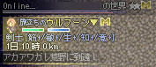

■
2012-09-25 (火) 片道勇者マニアモード修正▼
完全ターン制となるほか、倉庫や女神像の使用も不可、
さらには魔王のＨＰが激増するという
ちょっとスリル溢れるゲームモード、マニアモード！
の、修正を行い、Ver1.31となりました。
主に2回行動の敵が機能していなかった部分の修正です。
なお、まだマニアモード以外の部分に細かいバグがあるものの
致命的なバグはなさそうなので、正式にVer1.31として
オンライン更新できるようにしています。
（前回のファイルは削除いたしましたので、ゲーム内から
「オプション」→「オンライン更新」で更新を行ってください）
【バグ・仕様修正】
・騎士が試練の腕輪を持っていたミスを修正。デバッグ時のものでした。
・「冒険の履歴」で、世界の果てに到達したときのメッセージを赤色から緑色に修正。
【マニアモードの修正】
・コウモリやトラなどすばやい敵が機能していなかったバグを修正
（すばやい敵は2回行動ですが攻撃力が少しダウンします）
・二つ名「すばやい」付きの敵が2ターン行動になっていなかったバグ修正
・敵のx2・停止表記が実際の歩数と一致していないバグ修正
・特定条件において、マニアモードで隠しボスを倒してもクラス一覧に
緑のマークが付かないバグを修正
・世界選択時、マニアモードの選択肢が画面端に隠れる現象を修正
■
2012-09-23 (日) 片道勇者マニアモード実装▼
マニアモードは、敏捷による行動速度の変化がなくなり、
完全ターン制となるほか、倉庫や女神像の使用も不可、
さらには魔王のＨＰが激増するという
ちょっとスリル溢れるゲームモードとなっています。

マニアモードでプレイ中の人には輝きと黄金のＭマークが！
といっても大規模な修正でうっかり遊べなくなる人が出ると困るので、
今回はβ段階として、オンライン更新ではなく、
こちらの開発日誌での先行公開とさせていただきます。
とりあえず致命的な不具合は出なかったのでオンライン更新できるようにしました。
Ver1.30の更新内容は以下の通りです。
【バグ修正】
・次の地帯までの距離を教えてくれる人のkmが0やマイナス値になるバグが
あるらしいので気休め対応。
・リプレイで150km地点を超えたあたりから徐々に位置がズレる現象を修正
60、135km地点などに空データがあるのが原因でした。
情報を投稿してくださった方、本当にありがとうございました！
・詩人の「防御」のエフェクトの角度がキャラの向きによって変わるバグ修正
【機能追加】
・マニアモードを実装しました。
- 「難しい旅」と一緒に解放されます。すでに難しい旅が出てる人はすぐ選択可能。
- このモードは「マニアON＋やさしい旅」といった具合に切り替えが可能です。
- 完全ターン制になります（たまにダッシュ後などに2回出たりするのはご愛敬）
- 魔王のHP激増
- 倉庫と女神像使用不能
- まれに後ろからも敵出現
- プレイ中は黄金のMマークが付きます
「最初は魔王も恐かったけど慣れたら倒さないようにする方が大変だよー」
とお思いの方でも安心な、魔王を倒すだけでも厳しい冒険、ぜひお楽しみ下さい。
これでもまだ魔王のＨＰの盛りが足りないぞーというご意見などがあればぜひ。
マニアモードですから、ライト向けのアレコレは気にしません。
なお、優しいモードではかなりＨＰの盛りが少なめです。 カテゴリ: 片道勇者
カテゴリ: 片道勇者 カテゴリ: 片道勇者
カテゴリ: 片道勇者